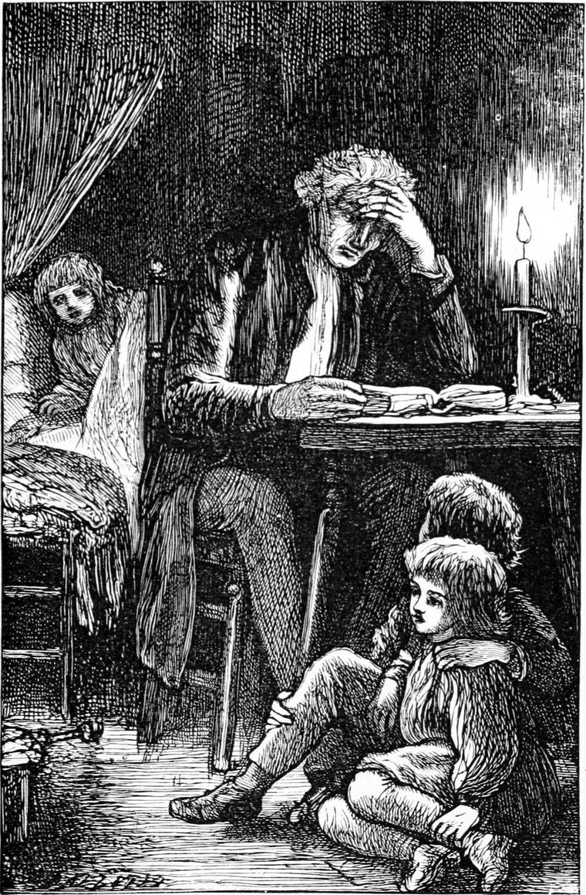

I woke early on the Sunday morning, and a most dreary morning it was. I could not lie in bed, and, although no one was up yet, rose and dressed myself. The house was as waste as a sepulchre. I opened the front door and went out. The world itself was no better. The day had hardly begun to dawn. The dark dead frost held it in chains of iron. The sky was dull and leaden, and cindery flakes of snow were thinly falling. Everywhere life looked utterly dreary and hopeless. What was there worth living for? I went out on the road, and the ice in the ruts crackled under my feet like the bones of dead things. I wandered away from the house, and the keen wind cut me to the bone, for I had not put on plaid or cloak. I turned into a field, and stumbled along over its uneven surface, swollen into hard frozen lumps, so that it was like walking upon stones. The summer was gone and the winter was here, and my heart was colder and more miserable than any winter in the world. I found myself at length at the hillock where Turkey and I had lain on that lovely afternoon the year before. The stream below was dumb with frost. The wind blew wearily but sharply across the bare field. There was no Elsie Duff, with head drooping over her knitting, seated in the summer grass on the other side of a singing brook. Her head was aching on her pillow because I had struck her with that vile lump; and instead of the odour of white clover she was breathing the dregs of the hateful smoke with which I had filled the cottage. I sat down, cold as it was, on the frozen hillock, and buried my face in my hands. Then my dream returned upon me. This was how I sat in my dream when my father had turned me out-of-doors. Oh how dreadful it would be! I should just have to lie down and die.
I could not sit long for the cold. Mechanically I rose and paced about. But I grew so wretched in body that it made me forget for a while the trouble of my mind, and I wandered home again. The house was just stirring. I crept to the nursery, undressed, and lay down beside little Davie, who cried out in his sleep when my cold feet touched him. But I did not sleep again, although I lay till all the rest had gone to the parlour. I found them seated round a blazing fire waiting for my father. He came in soon after, and we had our breakfast, and Davie gave his crumbs as usual to the robins and sparrows which came hopping on the window-sill. I fancied my father’s eyes were often turned in my direction, but I could not lift mine to make sure. I had never before known what misery was.
Only Tom and I went to church that day: it was so cold. My father preached from the text, “Be sure your sin shall find you out”. I thought with myself that he had found out my sin, and was preparing to punish me for it, and I was filled with terror as well as dismay. I could scarcely keep my seat, so wretched was I. But when after many instances in which punishment had come upon evil-doers when they least expected it, and in spite of every precaution to fortify themselves against it, he proceeded to say that a man’s sin might find him out long before the punishment of it overtook him, and drew a picture of the misery of the wicked man who fled when none pursued him, and trembled at the rustling of a leaf, then I was certain that he knew what I had done, or had seen through my face into my conscience. When at last we went home, I kept waiting the whole of the day for the storm to break, expecting every moment to be called to his study. I did not enjoy a mouthful of my food, for I felt his eyes upon me, and they tortured me. I was like a shy creature of the woods whose hole had been stopped up: I had no place of refuge—nowhere to hide my head; and I felt so naked!
My very soul was naked. After tea I slunk away to the nursery, and sat staring into the fire. Mrs. Mitchell came in several times and scolded me for sitting there, instead of with Tom and the rest in the parlour, but I was too miserable even to answer her. At length she brought Davie, and put him to bed; and a few minutes after, I heard my father coming down the stair with Allister, who was chatting away to him. I wondered how he could. My father came in with the big Bible under his arm, as was his custom on Sunday nights, drew a chair to the table, rang for candles, and with Allister by his side and me seated opposite to him, began to find a place from which to read to us. To my yet stronger conviction, he began and read through without a word of remark the parable of the Prodigal Son. When he came to the father’s delight at having him back, the robe, and the shoes, and the ring, I could not repress my tears. “If I could only go back,” I thought, “and set it all right! but then I’ve never gone away.” It was a foolish thought, instantly followed by a longing impulse to tell my father all about it. How could it be that I had not thought of this before? I had been waiting all this time for my sin to find me out; why should I not frustrate my sin, and find my father first?

As soon as he had done reading, and before he had opened his mouth to make any remark, I crept round the table to his side, and whispered in his ear,—
“Papa, I want to speak to you.”
“Very well, Ranald,” he said, more solemnly, I thought, than usual; “come up to the study.”
He rose and led the way, and I followed. A whimper of disappointment came from Davie’s bed. My father went and kissed him, and said he would soon be back, whereupon Davie nestled down satisfied.
When we reached the study, he closed the door, sat down by the fire, and drew me towards him.
I burst out crying, and could not speak for sobs. He encouraged me most kindly. He said—
“Have you been doing anything wrong, my boy?”
“Yes, papa, very wrong,” I sobbed. “I’m disgusted with myself.”
“I am glad to hear it, my dear,” he returned. “There is some hope of you, then.”
“Oh! I don’t know that,” I rejoined. “Even Turkey despises me.”
“That’s very serious,” said my father. “He’s a fine fellow, Turkey. I should not like him to despise me. But tell me all about it.”
It was with great difficulty I could begin, but with the help of questioning me, my father at length understood the whole matter. He paused for a while plunged in thought; then rose, saying,—
“It’s a serious affair, my dear boy; but now you have told me, I shall be able to help you.”
“But you knew about it before, didn’t you, papa? Surely you did!”
“Not a word of it, Ranald. You fancied so because your sin had found you out. I must go and see how the poor woman is. I don’t want to reproach you at all, now you are sorry, but I should like you just to think that you have been helping to make that poor old woman wicked. She is naturally of a sour disposition, and you have made it sourer still, and no doubt made her hate everybody more than she was already inclined to do. You have been working against God in this parish.”
I burst into fresh tears. It was too dreadful.
“What am I to do?” I cried.
“Of course you must beg Mrs. Gregson’s pardon, and tell her that you are both sorry and ashamed.”
“Yes, yes, papa. Do let me go with you.”
“It’s too late to find her up, I’m afraid; but we can just go and see. We’ve done a wrong, a very grievous wrong, my boy, and I cannot rest till I at least know the consequences of it.”
He put on his long greatcoat and muffler in haste, and having seen that I too was properly wrapped up, he opened the door and stepped out. But remembering the promise he had made to Davie, he turned and went down to the nursery to speak to him again, while I awaited him on the doorsteps. It would have been quite dark but for the stars, and there was no snow to give back any of their shine. The earth swallowed all their rays, and was no brighter for it. But oh, what a change to me from the frightful morning! When my father returned, I put my hand in his almost as fearlessly as Allister or wee Davie might have done, and away we walked together.
“Papa,” I said, “why did you say we have done a wrong? You did not do it.”
“My dear boy, persons who are so near each other as we are, must not only bear the consequences together of any wrong done by one of them, but must, in a sense, bear each other’s iniquities even. If I sin, you must suffer; if you sin, you being my own boy, I must suffer. But this is not all: it lies upon both of us to do what we can to get rid of the wrong done; and thus we have to bear each other’s sin. I am accountable to make amends as far as I can; and also to do what I can to get you to be sorry and make amends as far as you can.”
“But, papa, isn’t that hard?” I asked.
“Do you think I should like to leave you to get out of your sin as you best could, or sink deeper and deeper into it? Should I grudge anything to take the weight of the sin, or the wrong to others, off you? Do you think I should want not to be troubled about it? Or if I were to do anything wrong, would you think it very hard that you had to help me to be good, and set things right? Even if people looked down upon you because of me, would you say it was hard? Would you not rather say, ‘I’m glad to bear anything for my father: I’ll share with him’?”
“Yes, indeed, papa. I would rather share with you than not, whatever it was.”
“Then you see, my boy, how kind God is in tying us up in one bundle that way. It is a grand and beautiful thing that the fathers should suffer for the children, and the children for the fathers. Come along. We must step out, or I fear we shall not be able to make our apology to-night. When we’ve got over this, Ranald, we must be a good deal more careful what company we keep.”
“Oh, papa,” I answered, “if Turkey would only forgive me!”
“There’s no fear. Turkey is sure to forgive you when you’ve done what you can to make amends. He’s a fine fellow, Turkey. I have a high opinion of Turkey—as you call him.”
“If he would, papa, I should not wish for any other company than his.”
“A boy wants various kinds of companions, Ranald, but I fear you have been neglecting Turkey. You owe him much.”
“Yes, indeed I do, papa,” I answered; “and I have been neglecting him. If I had kept with Turkey, I should never have got into such a dreadful scrape as this.”
“That is too light a word to use for it, my boy. Don’t call a wickedness a scrape; for a wickedness it certainly was, though I am only too willing to believe you had no adequate idea at the time how wicked it was.”
“I won’t again, papa. But I am so relieved already.”
“Perhaps poor old Mrs. Gregson is not relieved, though. You ought not to forget her.”
Thus talking, we hurried on until we arrived at the cottage. A dim light was visible through the window. My father knocked, and Elsie Duff opened the door.